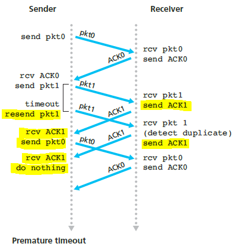

PEMODELAN PROTOKOL KOMUNIKASI LAYER TRANSPORT MENGGUNAKAN FINITE STATE MACHINE (FSM)
Apa itu Finite State Machine?
Finite State Machine (FSM) adalah rangkaian digital yang terdiri dari 3 bagian, yaitu Next-State Logic Circuit, State Memory Register dan Output Logic Circuit. Logic Circuit adalah rangkaian hasil implementasi persamaan logika,
sedangkan state memory register adalah sekumpulan Flip-Flop yang jumlahnya sama dengan jumlah bit feedback dan terkait dengan jumlah state. Misalnya jika jumlah state antara 5 sampai 8, maka jumlah feedbacknya harus terdiri
dari 3 Flip-Flop. Untuk sinkronisasi, State Memory Register dilengkapi dengan clock. Kecepatan clock (clock rate) tidak boleh melampaui waktu propagasi terpanjang pada Next-state logic circuit.
Definisi lain dari
FSM ialah FSM adalah sebuah metodologi perancangan sistem kontrol yang menggambarkan tingkah laku atau prinsip kerja sistem dengan menggunakan tiga hal berikut: State (keadaan), Event (kejadian) dan Action (aksi). FSM berfungsi
untuk mendefinisikan sekumpulan kondisi yang menentukan kapan suatu state harus berubah. Setiap state yang sedang dijalankan tersebut menentukan perilaku yang terjadi pada objek yang bersangkutan. Dalam state machine sistem
menempati satu state (keadaan). Sistem akan beralih atau bertransisi menuju ke state lain jika mendapatkan masukan event tertentu. Sistem akan tetap melakukan aksi yang sama pada suatu state sampai sistem menerima event
tertentu baik yang berasal dari perangkat luar atau komponen dari sistem itu sendiri. Setiap state terhubung oleh transisi dan setiap transisinya mengarah ke satu state lainnya. Transisi keaadan ini umumnya juga disertai
oleh aksi yang dilakukan oleh sistem ketika menanggapi masukan yang terjadi. Aksi yang dilakukan tersebut dapat berupa aksi sederhana yang melibatkan rangkaian proses yang relatif rumit. Diagram state FSM digambarkan pada
gambar sebagai berikut.
Diagram tersebut memperlihatkan FSM dengan dua buah state dan dua buah input serta empat buah aksi output yang berbeda. Seperti terlihat pada gambar, ketika sistem mulai dihidupkan, sistem akan bertransisi menuju state0, pada keadaan ini sistem akan menghasilkan Action1 jika terjadi masukan Event0, sedangkan jika terjadi Event1 maka Action2 akan dieksekusi kemudian sistem selanjutnya bertransisi ke keadaan State1 dan seterusnya
Jenis-Jenis Finite State Machine (FSM)
- FSM ber-output
- FSM tidak ber-output
FSM ber-output digunakan untuk merancang mesin atau sistem.
FSM tidak ber-output digunakan untuk pengenalan bahasa dalam komputer, dengan input yang dimasukkan akan diperoleh apakah input tersebut dikenal oleh bahasa komputer atau tidak. Salah satu penggunaan FSM tidak ber-output adalah program compiler, yaitu program untuk memeriksa apakah perintah yang digunakan pengguna benar atau salah.
Reliable Data Transfer (rdt)
Reliable Data Transfer (rdt) adalah suatu mekanisme TCP yang menyediakan komunikasi logis antara proses aplikasi yang berjalan pada host yang berbeda. dinamakan reliabel karena TCP menjamin bahwa data tersebut pasti diterima sesuai dengan yang dikirimkan. Terdapat beberapa tipe rdt yaitu rdt 1.0, rdt 2.1, rdt 2.2, rdt 3.0, dll. Secara dasar, rdt menggunakan protokol stop-and-wait. Mekanismenya adalah setiap mengirim paket, sender akan berhenti mengirim dan menunggu feedback dari penerima yang menandakan bahwa paket telah sampai tujuan. Namun, karena alasan jarak yang jauh, muncul berbagai versi update yang ada di rdt.
rdt3.0 = RDT over a Lossy Channel with Bit Errors
Pada proses rdt 3.0 pengiriman data dan ACK dilakukan secara berurutan tetapi tidak terdapat duplikasi data atau ACK seperti pada RDT 2.2. Pada versi ini, Sender dilengkapi dengan timer untuk ACK. Cara kerjanya adalah jika ACK tidak tiba, maka paket tersebut akan dikirim ulang. Jika seandainya ACK tidak hilang, namun hanya terkena delay, maka hal ini akan menyebabkan paket terduplikasi. Namun, karena adanya field untuk sequence number, maka paket tidak perlu diteruskan ke lapisan aplikasi.
RDT 3.0 Dari sisi SENDER (PENGIRIM)
Gambar diatas menunjukkan FSM untuk rdt 3.0 pada sisi pengirim (sender). Pada gambar tersebut, jelas bahwa terdapat 4 state yaitu state wait for call 0 from above, state wait for ACK 0, state wait for call 1 from above, dan state wait for ACK 0.
Adapun makna beberapa simbol diatas ialah:
- Tanda panah putus-putus : state awal dari FSM.
- Tanda panah biru : transisi protokol dari 1 state ke state lain atau dari 1 state kembali ke state itu sendiri
- Event: menyebabkan terjadinya transisi pada state, terletak di atas garis horizontal. Adapun contoh event pada gambar diatas yakni : rdt_send(data), timeout, rdt_rcv(rcvpkt),dst.
- Action : aksi/tindakan yang dilakukan jika terjadi event yg terdapat di bawah garis horizontal
- ACK : Acknowledgment (tanda terima dari receiver).
- ^ : tidak ada action yang dilakukan atau tidak ada event yang terjadi
Prinsip Kerja rdt 3.0 dari sisi Sender
Proses pertama dimulai dari state wait for call 0 from above yang ditunjukkan oleh tanda panah putus-putus.
Pada state ini, terdapat event rdt_send(data) yang artinya data dari application layer di oper turun ke transport layer. Hal ini menandakan bahwa data telah berada di transport layer. Event rdt_send(data) kemudian diikuti oleh 3 tindakan yang dilaksanakan secara berurutan yaitu:
- sndpkt=make_pkt(0,data,checksum) yang berarti masukkan data ke dalam bentuk paket. Setelah data berada di transport layer maka data akan dimuat ke dalam bentuk paket dan diberi informasi-informasi tambahan. Sebuah paket berisi data itu sendiri, checksum, dan sequence number (pada status “wait for call 0 from above” sequence number = 0).
- udt_send(sndpkt) yang berarti paket ditransfer ke layer yang berada dibawah (network layer) untuk dikirimkan ke sisi penerima.
- start_timer yang berarti countdown time telah dimulai.
Setelah start_timer dilaksanakan maka status akan segera berubah menjadi wait for ACK 0.
Selanjutnya proses kedua yaitu pada state wait for ACK 0.
Pada state ini terdapat 3 event, yaitu:
- rdt_rcv(rcvpkt) && (corrupt(rcvpkt)) || isACK(rcvpkt,1))akan terjadi jika sisi sender menerima ack 1, padahal status saat ini ialah wait for ack 0 (menunggu ack 0). Itu berarti ack yang diterima oleh sender tidak sesuai harapan sehingga sender menganggap bahwa paket yang diterima oleh receiver corrupt ataupun ack yang diterima oleh sender corrupt. Pada event ini tidak dilakukan tindakan apapun (∧). State akan kembali menjadi wait for ACK 0. Lalu, menunggu sampai terjadi timeout.
- timeout. Event ini menandakan bahwa waktu hitung mundur yang dimulai pada saat data dikirim telah habis sementara ACK 0 belum diterima oleh sender. Tindakan yang dilakukan pada event ini ialah :
- udt_send(sndpkt) yang berarti aksi protokol untuk melakukan pengiriman ulang paket.
- start_timer merupakan tindakan untuk memulai kembali countdown time terhadap paket yang baru saja dikirim. Lalu protokol akan kembali pada status wait for ACK 0.
- rdt_rcv(rcvpkt) && notcorrupt(rcvpkt) && isACK(rcvpkt,0) merupakan event yang berarti bahwa paket ack telah diterima dan data tidak korup atau rusak serta ack bernilai 0 (sesuai harapan). Tindakan dari event ini ialah stop_timer, merupakan tindakan yang menghentikan countdown timer.
Setelah stop_timer dilaksanakan maka status akan berubah menjadi wait for call 1 from above.
Selanjutnya proses ketiga yaitu pada state wait for call 1 from above.
Pada state ini terdapat dua buah event, yaitu:
- rdt_send(data). Event pertama mirip dengan event pada state wait for call 0 from above dan telah dijelaskan sebelumnya. Perbedaanya hanya terletak pada sequence number. State wait for call 1 from above akan mengirimkan paket dengan sequence number 1. Sehingga paket berisi data itu sendiri, checksum, dan sequence number bernilai 1. Lalu paket ini kemudian dikirimkan dengan action udt_send(sndpkt). Setelah itu start_timer akan dijalankan kemudian status akan berubah menjadi wait for ACK 1.
- rdt_rcv(rcvpkt) merupakan event yang tidak diikuti oleh tindakan apapun (do nothing “∧”). Event ini akan terjadi pada kasus premature timeout seperti pada gambar dibawah ini.
 Pada gambar diatas terdapat pengiriman ack yang delay atau sampai saat countdown time telah expired sehingga sender mengirim 2 paket yang sama dan menerima 2 ACK untuk paket yang sama. Saat ACK pertama telah diterima maka status akan langsung berubah. Sehingga ACK kedua akan diterima pada status wait for call 1 from above danACK kedua ini akan diabaikan (do nothing)
Next state yaitu wait for ACK 1.
State ini mirip dengan state wait for ACK 0. Perbedaannya hanya terletak pada nilai sequence number yang ditunggu. Pada state ini protokol menunggu ACK dengan nilai 1. Jika ACK yang diterima ACK 0 maka state tidak akan berubah dan akan menunggu hingga timeout, jika sudah timeout maka paket akan dikirim ulang. Jika ACK yang diterima ACK 1 maka timer akan dihentikan lalu state akan berubah menjadi wait for call 0 from above.
Siklus ini akan terus berulang dengan cara yang sama sampai pengirimian data selesai.
RDT 3.0 Dari sisi RECEIVER (PENERIMA)
Pada dasarnya FSM protokol komunikasi dari sisi penerima pada rdt 3.0 sama dengan FSM protokol komunikasi dari sisi penerima pada rdt 2.2. perbedaan dari rdt 3.0 dan rdt 2.2 hanya terletak pada sisi pengirim saja, yaitu adanya penambahan timeout. Sedangkan sisi penerimanya tetap sama. Namun, adanya penambahan timeout pada sender side mengakibatkan adanya kemungkinan duplikat paket yang diterima receiver. Terdapat dua buah state pada FSM protokol komunikasi diatas yaitu tate Wait for 0 from below dan state Wait for 1 from below serta terdapat dua event pada masing-masing state.
Prinsip Kerja rdt 3.0 dari sisi Receiver
Proses pertama dimulai dari state wait for 0 from below yang ditunjukkan oleh tanda panah putus-putus.
Pada state ini terdapat event rdt_rcv(rcvpkt && notcorrupt(rcvpkt) && has_seq0(rcvpkt) yang artinya sebuah paket telah diterima dari layer bawah (network layer) dan paket itu tidak korup serta paket itu memiliki sequence number 0 (sesuai dengan harapan), maka akan diambil 4 tindakan, yaitu :
- Mengekstrak paket sehingga menjadi data dengan tindakan extract(rcvpkt,data).
- Setelah itu data akan dioper ke layer atas (application layer) dengan tindakan Deliver_data(data).
- Kemudian, FSM protokol penerima akan membuat paket yang berisi ACK beserta sequence number 0 dan checksum dengan menggunakan tindakan sndpkt=make_pkt(ACK,0,checksum).
- Terakhir, paket ACK ini akan di transfer ke layer bawah (network layer) untuk dikirimkan dengan action udt_send(sndpkt).
Setelah ke-empat action itu terlaksana maka status berubah menjadi Wait for 1 from below.
Selanjutnya proses kedua yaitu pada state wait for 1 from below.
Cara kerja state ini sama dengan state sebelumnya, hanya saja pada state ini sequence number yang diharapkan adalah 1. Sehingga, eventnya adalah rdt_rcv(rcvpkt && notcorrupt(rcvpkt) && has_seq1(rcvpkt) yang berati paket telah diterima dan paket tidak korup serta paket memiliki sequence number 1 (sesuai harapan). Lalu ada 4 tindakan yang akan dilaksanakan yaitu mengekstrak paket , mentransfer data ke upper layer, membuat paket ACK 1, dan yang terakhir mentransfer paket ke lower layer untuk dikirimkan.
Bagaimana jika ternyata paket korup atau terdapat duplikat paket pada receiver?
Maka, event yang akan terjadi adalah rdt_rcv(rcvpkt && (corrupt(rcvpkt) || has_seq0(rcvpkt)).Di dalam event ini terdapat dua kemungkinan yaitu, rdt_rcv(rcvpkt) && (corrupt(rcvpkt)) yang berati paket telah diterima namun paket tersebut corrupt atau kemungkinan kedua adalah rdt_rcv(rcvpkt) && has_seq0(rcvpkt)) yang berarti paket telah diterima namun paket memiliki sequence number 0 (padahal paket yang diharapkan memiliki sequence number 1). Kemungkinan kedua ini bisa mengindikasikan adanya duplicate packet yang diterima receiver. Baik kemungkinan pertama yang terjadi ataupun kemungkinan kedua yang terjadi, receiver akan melakukan tindakan yang sama yaitu, sndpkt=make_pkt(ACK,0,checksum) serta udt_send(sndpkt).
Ini berarti jika paket korup atau paket terdeteksi duplikat maka penerima tidak akan mengekstrak paket, penerima hanya akan mengirimkan ACK dengan sequence number 0. Begitu pula pada state Wait for 0 from below,jika pada state ini paket korup atau duplikasi paket maka paket tidak akan diekstrak, lalu penerima hanya akan menigirim ack bernilai 1.
Siklus ini akan terus berlangsung sampai pengiriman data selesai.
Referensi:
Kurose F. James, Keith W. Ross. 2005. Computer Networking. Unite States of Amerika: Pearson